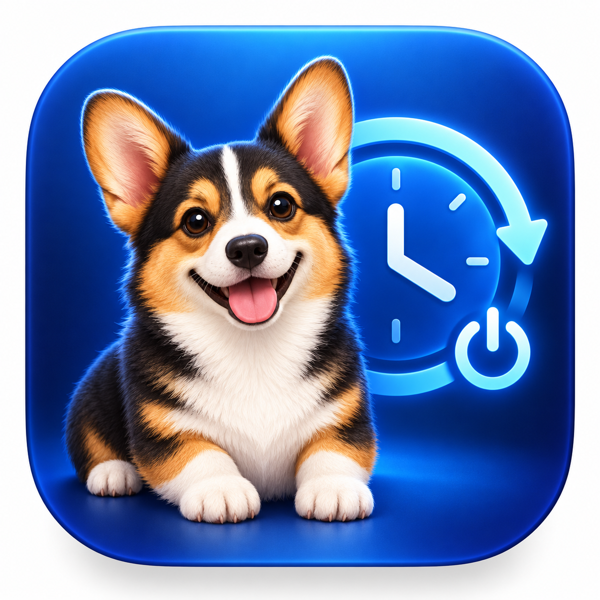

Schedule startup or wake
Choose when your Mac should automatically start up or wake so it is ready when you need it.

Put your Mac on a dependable schedule. Choose the days and times it should start up or wake, and when it should shut down, using a simple utility that lives quietly in your menu bar.
Choose when your Mac should automatically start up or wake so it is ready when you need it.
Set an automatic shutdown time for selected days instead of leaving your Mac running longer than necessary.
Create a schedule for weekdays, weekends, or any combination of days that fits the way you use your Mac.
BootClock stays out of the Dock and remains easy to reach from the macOS menu bar whenever you need to make a change.
Review the startup, wake, and shutdown schedule currently stored by macOS directly inside the app.
BootClock uses the power-scheduling system built into macOS, so the saved schedule does not depend on keeping the app open.
Korgi BootClock is made for people who want straightforward control over their Mac's daily routine. Select the days, choose the times, save the schedule, and let macOS handle the rest.